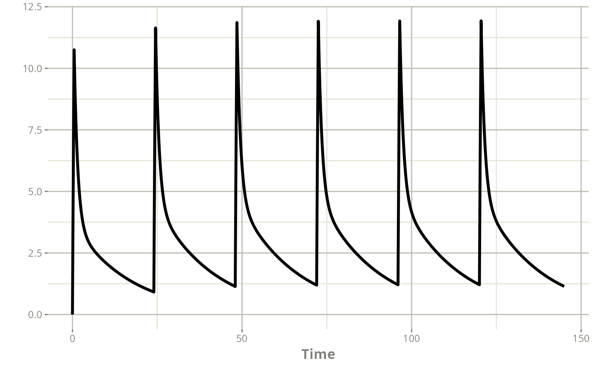

Route of administration
Source:vignettes/articles/route_of_administration.Rmd
route_of_administration.RmdIntroduction
The Caldès 2009 ganciclovir model (https://doi.org/10.1128/aac.00085-09) is capable of describing the pharmacokinetics of either injectable ganciclovir or oral valganciclovir.
mod_ganciclovir_Caldes_2009 <- function() {
ini({
THETA_cl <- 7.49
THETA_v1 <- 31.90
THETA_cld <- 10.20
THETA_v2 <- 32.0
THETA_ka <- 0.895
THETA_baf <- 0.825
ETA_cl ~ 0.107
ETA_v1 ~ 0.227
ETA_ka ~ 0.464
ETA_baf ~ 0.049
add.sd <- 0.465
prop.sd <- 0.143
})
model({
TVcl = THETA_cl*(ClCr/57);
TVv1 = THETA_v1;
TVcld = THETA_cld;
TVv2 = THETA_v2;
TVka = THETA_ka;
TVbaf = THETA_baf;
cl = TVcl*exp(ETA_cl);
v1 = TVv1*exp(ETA_v1);
cld = TVcld;
v2 = TVv2;
ka = TVka*exp(ETA_ka);
baf = TVbaf*exp(ETA_baf);
k10 = cl/v1;
k12 = cld / v1;
k21 = cld / v2;
Cc = centr/v1;
d/dt(depot) = -ka*depot
d/dt(centr) = ka*depot - k10*centr - k12*centr + k21*periph;
d/dt(periph) = k12*centr - k21*periph;
d/dt(AUC) = Cc;
f(depot)=baf;
alag(depot)=0.382;
Cc ~ add(add.sd) + prop(prop.sd) + combined1()
})
}Intravenous ganciclovir
Patient record with TDM data
To describe intravenous administration, a CMT column has been added to the TDM data table to indicate administrations directly into the central compartment.
Note: to compute the AUC between the last dose and the time of the last dose + 24 hours, a dummy dose of 0 mg is added to the time of the last observation of interest (i.e. H144).
patient <- data.frame(ID=1,TIME=c(0,121,122,126,144),
DV=c(NA,10.8,5.8,3.3,NA),
ADDL=c(5,0,0,0,0),
II=c(24,0,0,0,0),
EVID=c(1,0,0,0,1),
CMT=c("centr",NA,NA,NA,"centr"),
AMT=c(250,0,0,0,0),
DUR=c(0.5,NA,NA,NA,NA),
ClCr=25)
patient
#> ID TIME DV ADDL II EVID CMT AMT DUR ClCr
#> 1 1 0 NA 5 24 1 centr 250 0.5 25
#> 2 1 121 10.8 0 0 0 <NA> 0 NA 25
#> 3 1 122 5.8 0 0 0 <NA> 0 NA 25
#> 4 1 126 3.3 0 0 0 <NA> 0 NA 25
#> 5 1 144 NA 0 0 1 centr 0 NA 25Individual PK profile and AUC 0-24
The individual PK profile can be estimated, and plotted.
map_patient <- poso_estim_map(patient,mod_ganciclovir_Caldes_2009)
#> using C compiler: ‘gcc (Ubuntu 11.4.0-1ubuntu1~22.04) 11.4.0’
plot(map_patient$model,Cc)
The difference between the cumulative AUC at H144 and that at H120 gives the AUC 0-24 after the last dose. Using data.table is optional, but the syntax is more convenient.
library(data.table)
data.table(map_patient$model)[time==144,AUC] -
data.table(map_patient$model)[time==120,AUC]
#> [1] 72.19085Optimal dose for an intravenous ganciclovir injection
The optimal dose to achieve an AUC of 50 mg.h/L can be determined for
a new injection of IV ganciclovir by setting
cmt_dose = "centr".
poso_dose_auc(patient,mod_ganciclovir_Caldes_2009,tdm=TRUE,
time_dose = 145,
duration = 1,
time_auc = 24,
target_auc = 50,
cmt_dose = "centr")
#> $dose
#> [1] 156.5335
#>
#> $type_of_estimate
#> [1] "point estimate"
#>
#> $auc_estimate
#> [1] 50
#>
#> $indiv_param
#> THETA_cl THETA_v1 THETA_cld THETA_v2 THETA_ka THETA_baf add.sd prop.sd
#> 1 7.49 31.9 10.2 32 0.895 0.825 0.465 0.143
#> ETA_cl ETA_v1 ETA_ka ETA_baf covar
#> 1 0.05256541 -0.4773341 -3.589527e-08 -1.272466e-07 25Optimal dose for an oral valganciclovir administration
The optimal dose to achieve an AUC of 50 mg.h/L can be determined for
an administration of oral valganciclovir by setting
cmt_dose = "depot".
poso_dose_auc(patient,mod_ganciclovir_Caldes_2009,tdm=TRUE,
time_dose = 145,
time_auc = 24,
target_auc = 50,
cmt_dose = "depot")
#> $dose
#> [1] 193.1298
#>
#> $type_of_estimate
#> [1] "point estimate"
#>
#> $auc_estimate
#> [1] 50
#>
#> $indiv_param
#> THETA_cl THETA_v1 THETA_cld THETA_v2 THETA_ka THETA_baf add.sd prop.sd
#> 1 7.49 31.9 10.2 32 0.895 0.825 0.465 0.143
#> ETA_cl ETA_v1 ETA_ka ETA_baf covar
#> 1 0.0525648 -0.4773328 -1.018546e-06 2.327066e-07 25Keeping the default value of cmt_dose, which is the first compartment declared in the PK model, would also work here.